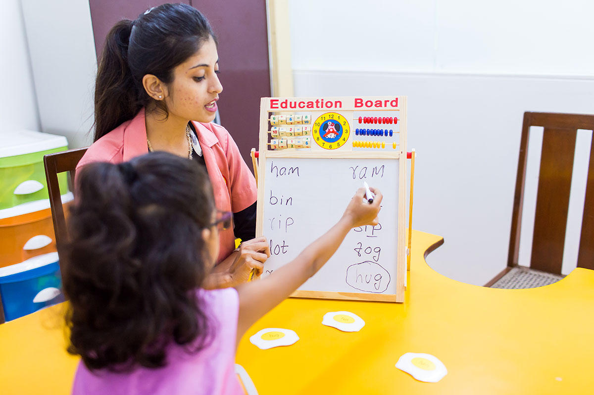

Introduction
Remedial programs are generally designed in ways through which a gap between child's expected performance and current performance can be bridged. It focuses on imparting the core skills. It is also known as Developmental education or Basic Skill Education or 3R's Education (Reading, writing and Arithmetic).
Remedial Therapy can strengthen the weak areas related to cognition and can be availed by any child who is facing difficulty in learning and coping up in daily life activities, or difficulty in Cognitive understanding/Cognitive Skills, Social Communication skills, Fine Motor Skills and Behavioral Skills.
Remedial Therapy focuses on skills rather than on content. The therapy provided uses behavior teaching methods, which have clearly defined goals and strategies and is tailored and customized to each child's specific needs.
Areas we work on
- Reading Skills (reading and understanding information)
- Writing Skills (spellings, handwriting, writing expression)
- Math Skills (basic and advance)
- Information Processing (perception and memory)
- Study Skills
- Social Skills
- Functional Academics
Process
We start by taking a history for better understanding of the areas of concern, followed by an informal assessment for understanding the grade level at which the child can process information in the concerned area. We explain the assessment results to the parents and set goals with them (long and short term) for the child. Thereafter, formation of Individual Education Plan (IEP) takes place based on the results of the assessment and goals set by parents. The progress is tracked on a regular basis and post intervention evaluation is done.
Parents are an integral part of all therapy sessions and goal settings.
Importance of Remedial Therapy
As children grow older, expectations from them increase drastically. A child studying in grade 4 or 5 is expected to sit and attend long classes. A child with neurodevelopmental difficulties would find it hard to cope with this. Here is where remedial therapy comes in.
Children with neurodevelopmental concerns start showing academic difficulties at an early stage, which should not be ignored. Early remedial intervention gives them a chance to learn coping techniques in their concern areas, build self-confidence and abstract thinking faster. They find it easier to meet academic expectations and learn more.
Techniques
The remedial technique can start with basic skills like letter recognition, sound identification, syllabification and move on to higher elements such as blends, classification, grammar rules and so on.